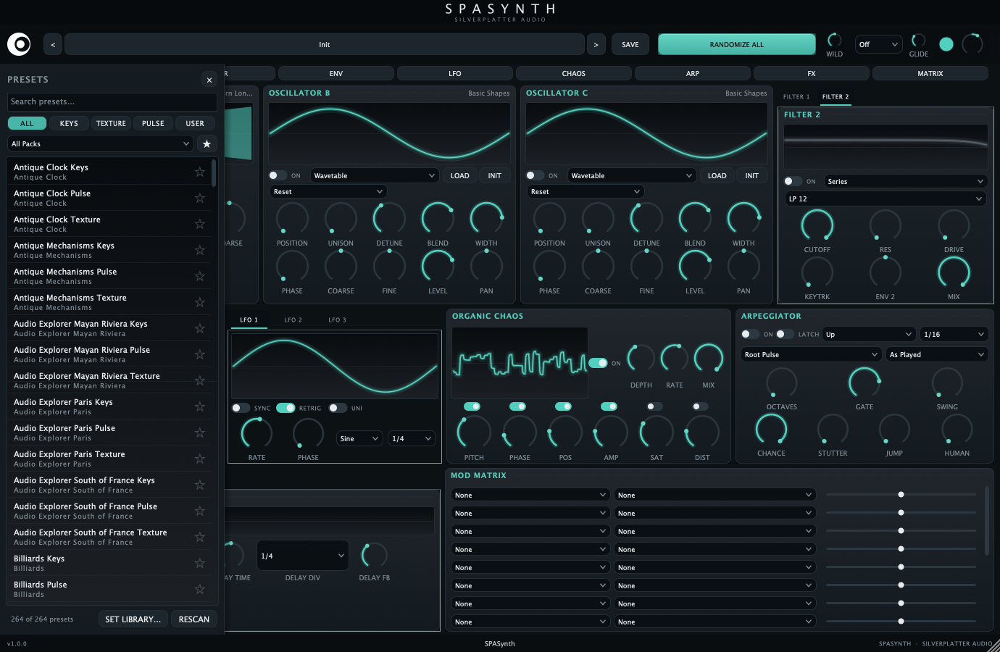
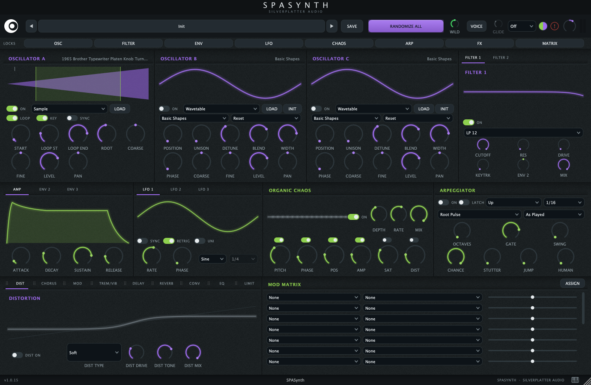

7 engines, 3 slots
Wavetable, Sample/SFX, Granular, Virtual Analog, 2-op FM, Noise (white/pink/brown), and Karplus-Strong Pluck. Mix and match across three oscillator slots.
SILVERPLATTER AUDIO PRESENTS
SPASynth is a hybrid synthesizer built around the entire Silverplatter Audio sound-effects library (88 packs, up to 11,474 production-ready sounds), playable as oscillators, granular fuel, and modulation sources inside a full wavetable synth with an organic-chaos engine and a one-button patch randomizer.

THE HOOK
A typewriter. A rainstorm. A billiard break. Load any of the library's up to 11,474 sounds and it becomes a playable keyboard instrument, a granular cloud, or the modulation source that pumps your filter, all at once, if you want.
Every loaded sound is analyzed the moment it loads: amplitude follower and pitch tracking, automatically. Route a thunderstorm's loudness to your filter cutoff and the storm plays the synth.
PATCH GENERATION
RANDOMIZE ALL rolls an entire playable patch. The WILD knob sets how polite or unhinged the results get. Every parameter carries hand-tuned, musically weighted randomization ranges and biases. Every roll is guaranteed to make sound.
Lock what you love, re-roll the rest:
ORGANIC CHAOS
A bank of slow random walkers drifts pitch, phase, wavetable position, and amplitude per voice, plus drifting saturation and distortion for harmonic movement. Global depth, rate, and mix, all modulatable. It's what makes digital patches breathe.
THE FULL PICTURE
Wavetable, Sample/SFX, Granular, Virtual Analog, 2-op FM, Noise (white/pink/brown), and Karplus-Strong Pluck. Mix and match across three oscillator slots.
Two filters, 8 types each (LP/HP/BP/Notch, 12 & 24 dB), drive, keytracking, ±4 octave envelope depth, and dry/wet mix. Route them series or parallel.
20 sources (3 envelopes, 3 LFOs, macros, velocity, mod wheel, aftertouch, chaos, and 6 SFX followers) into 90+ destinations. Evaluated at 64-sample resolution.
Up, down, up/down, converge, diverge, chord, random-walk, and melodic phrases. Plus CHANCE, STUTTER, JUMP, and HUMAN probability controls that turn patterns into performances.
Global glide across every engine and both filters' keytracking, 16-voice polyphony, and MIDI Learn on every single control: right-click, move a knob, done.
Distortion, chorus, tempo-synced ping-pong delay, reverb, and a 3-band EQ, each with its own live, signal-fed scope.
24-bit/48kHz, production-ready for film and TV. Auto-discovery means you extract to one folder and SPASynth finds it, no scanning dialogs. 264 factory presets included.
A resizable, GPU-friendly vector interface where every scope, envelope, LFO, and filter curve is animated live from the actual audio engine. Re-tint every accent color to your own palette.
MAKE IT YOURS
The default theme runs a single deep teal accent throughout. A built-in picker re-tints the entire interface: split oscillators and filters from envelopes and modulation into two colors like this, or keep everything linked for the default single-color look.

EDITIONS
The full synth
The full synth, the whole library
$702 is exactly what the Everything Bundle costs on its own (already discounted from $1,264), so SPASynth comes included at no extra cost.
Already own Standard? Add the complete library for the difference: download it, drop it in the same folder. No reinstall, nothing to activate. Individual add-on packs install the same way. Every copy can carry a personal ownership stamp ("Licensed to you@…") shown in the footer. A signature, not a lock.
THE POSITION
SPASynth has no copy protection, no serial numbers, no activation, no dongles, and it never phones home. We sell to people who pay for the tools they love, and we price it accordingly. The license is simple: use the sounds in anything you make, royalty-free, forever: just don't redistribute the raw files.
SPECS
No AAX in v1. Current release: v1.0.0.
FAQ
On macOS, SPASynth ships as AU and VST3, plus a standalone app. On Windows, it's VST3 and standalone. If your DAW hosts either format, you're set.
No. Point SPASynth at the library folder wherever it lives: external drive, NAS, wherever. Auto-discovery finds it, and presets use portable paths so sessions survive the library living anywhere.
Pay the difference, download the complete 11,474-sound library, drop it in the same folder as your Standard library. No reinstall, nothing to activate.
No. No serial numbers, no activation, no dongles, no phone-home, ever. Buy it, download it, own it.
Not in v1.
Yes. Updates across the v1 line are free. Since there's no activation, updating is just downloading the latest installer and running it.
Yes. The Windows installer isn't certificate-signed, so SmartScreen may flag it on first run: click "More info," then "Run anyway." The macOS installer is signed and notarized by Apple, so it installs without warnings.